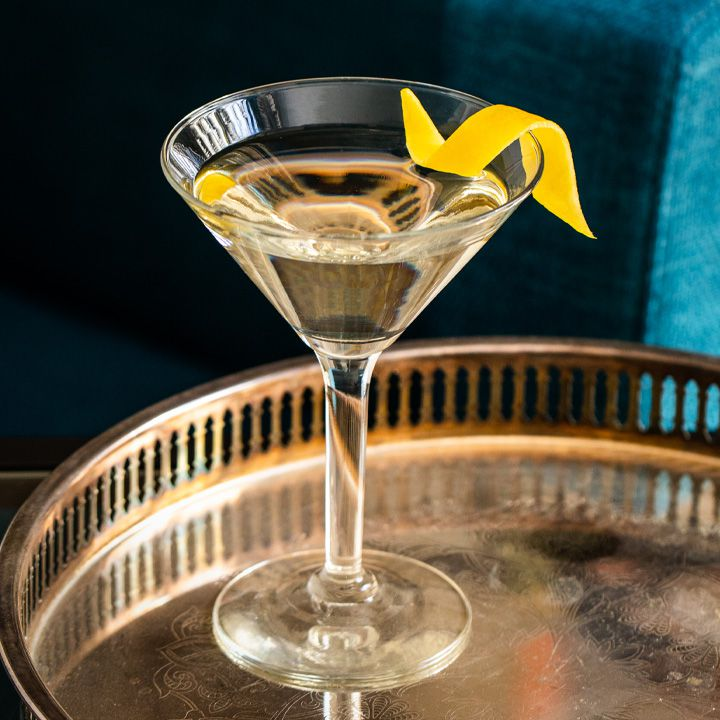

Martini

The martini is a classic cocktail at bars across the world and often customized. Below is the classic recipe for this cocktail.
Ingredients
- 2.5 oz Gin of choice
- 0.5 oz dry vermouth
- Ice
- Lemon twist or olive for garnish
Steps
- Ice the martini glass to chill
- Pour ice into mixing beaker
- Add gin and vermouth to the beaker
- Stir ingredients until the beaker is cold at the bottom or begins to frost
- Empty the martini glass and double strain from the beaker into the glass
- Place garnish either lemon twist or olive inside the glass